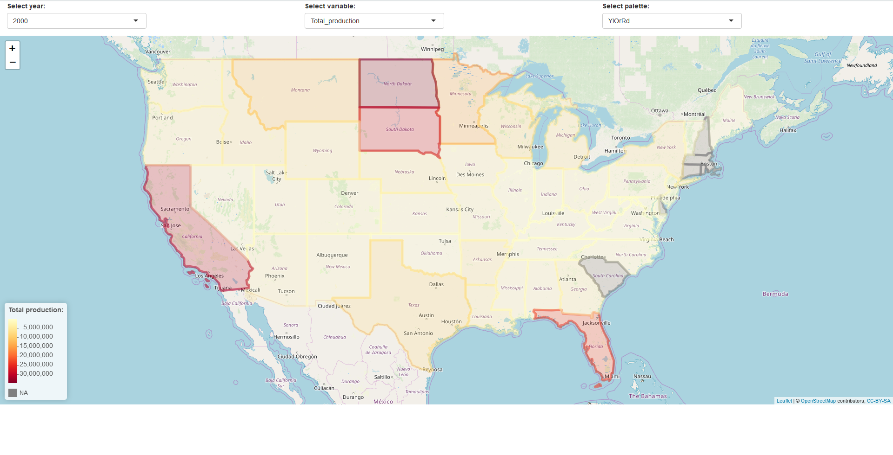

4 Karten mit Shiny
Interaktive Karten können durch Popups deutlich mehr Informationen überliefern als statische Karten, doch auch sie haben ihre Limitationen:
- Es gibt nur ein fixes User Interface
- Es gibt Probleme bei der Darstellung großer Datensätze
- Die Verknüpfung der Karten mit anderen Graphen ist nur schwer möglich.Eine Möglichkeit um diese Probleme anzugehen, stellen Web Apps dar. Das Grundprinzip einer Web App besteht aus zwei Teilen:
1. Das User Interface: Was sieht der Benutzer? Dies beinhaltet die Karte(n), Auswahlmöglichkeiten um die Karten zu gestalten, zusätzliche Grafiken, ...
2. Der Server: Auf dem Server findet die Berechnung basierend auf den Inputs aus dem User Interface statt. Diesen Teil sieht der Benutzer nicht.In R können diese Apps mit Hilfe des Pakets shiny entwickelt werden. Hierfür muss ein Skript mit Namen app.R erstellt werden, dass zwei Elemente enthält: ui und server. Alternativ können auch zwei Skripte ui.R und server.R erstellt werden. Im weiteren Verlauf wird von einem Skript, app.R, ausgegangen. Am Ende dieses Skript muss der Befehl shinyApp(ui = ui, server = server) stehen, damit die App gestartet werden kann.
Ein einfaches Beispiel für eine App mit den Paketen shiny und leaflet könnte wie folgt aussehen:
Zuerst werden die Paketen und der Bienen Datensatz aus Kapitel 2 geladen:
library(leaflet)
library(RColorBrewer)
library(sf)
library(shiny)
library(stringr)
honey <- read_sf("honey.shp")
colnames(honey)[3:8] <- c("Number_of_colonies", "Yield_per_colony",
"Total_production", "Stocks","Price_per_lb",
"Value_of_production"
)Als erstes wird das User Interface definiert: Es wird eine fluidPage erstellt, damit sich die App anpasst wenn das Fenster verkleinert oder vergrößert wird. Dann wird eine fluidRow hinzugefügt, in die drei column Elemente hinzugefügt werden, die jeweils einen selectInput enthalten. Eine column gibt an, wieviel Platz ein Element in der Breite einnimt. Dafür wird das Fenster in 12 Spalten unterteilt, 4 nimmt also ein Drittel der Seite ein. Ein selectInput entspricht einer Combobox, also ein Eingabefenster bei dem aus mehreren Vorschlägen ausgewählt werden kann. multiple = FALSE sorgt dafür, dass maximal ein Vorschlag ausgewählt werden kann. Nach der ersten fluidRow wird eine zweite hinzugefügt, die einen leafletOutput enthält, also die Karte auf der später alles dargestellt wird.
ui <- fluidPage(
fluidRow(
column(
width = 4,
selectInput(
inputId = "year",
label = "Select year:",
choices = 1998:2012,
multiple = FALSE
)
),
column(
width = 4,
selectInput(
inputId = "variable",
label = "Select variable:",
choices = colnames(honey)[3:8],
multiple = FALSE
)
),
column(
width = 4,
selectInput(
inputId = "palette",
label = "Select palette:",
choices = c("YlOrRd", "YlGnBu", "BuPu", "Oranges", "Greys"),
multiple = FALSE
)
)
),
fluidRow(
leafletOutput(
outputId = "map",
height = "80vh"
)
)
)Anschließend muss der Server definiert werden. outmap$map definiert was mit dem Objekt mit der outputId map geschehen soll. Die Funktion renderLeaflet wird verwendet, um eine Leaflet Karte zu rendern. Doch bevor die Karte gerendert werden kann, muss etwas Vorarbeit geleistet werden. Als erstes wird ein Teildatensatz erstellt, der alle Daten aus dem ausgewählten Jahr für die ausgewählte Variable enthält. Die von dem Benutzer ausgewählten Werte werden mit input$inputId abgerufen. In diesem Fall input$year, input$variable und input$palette. Diese haben immer die Klassen character, für das Jahr muss dieser Wert also in einen numerischen umgewandelt werden. Die Funktion colorNumeric wird für die Erstellung der Farbpalette verwendet, ehe ein Titel für die Legende erstellt wird und die Karte erstellt wird. Mehr zu der Erstellung der Karte und des Leaflet Pakets in dem nächsten Kapitel.
server <- function(input, output, session) {
output$map <- renderLeaflet({
honey_data <- honey[honey$year == as.numeric(input$year), input$variable]
pal <- colorNumeric(brewer.pal(9, input$palette),
st_drop_geometry(honey_data))
title <- paste(str_replace_all(input$variable, "\\_", " "), ":", sep = "")
leaflet() %>%
addTiles() %>%
addPolygons(data = honey_data, color = ~pal(get(input$variable))) %>%
addLegend(data = honey_data, pal = pal, values = ~get(input$variable),
title = title, opacity = 1, position = "bottomleft",
na.label = "No data available")
})
}Die resultierende App sieht wie folgt aus: 